Продается двухкомнатная квартира на Берута, 16-2
Местоположение и инфраструктура
Метро
Риэлторы любят писать о квартирах в соседних домах, что они находятся в 5-ти минутах ходьбы до метро.
Но в реальности это 12 минут (меньше километра) до метро обычным шагом (и скриншот с карт яндекса - тому подтверждение).
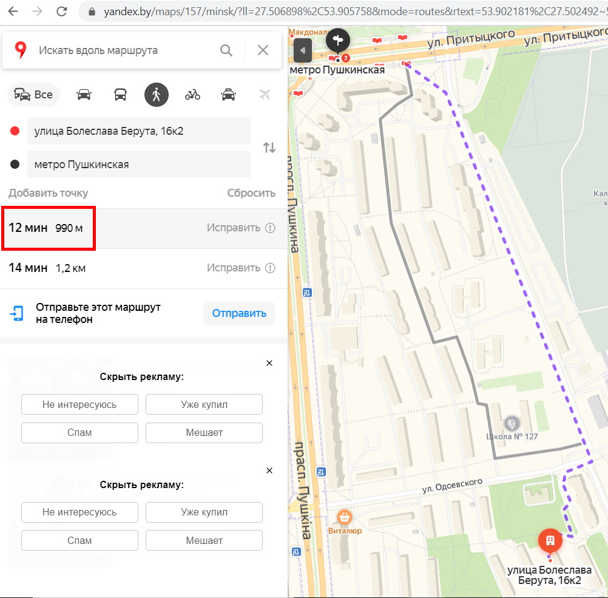
Наземный общественный транспорт
- До ближайшей остановки общественного транспорта - 6 минут ходьбы.
- Удобные маршруты транспорта во все концы города рядом со станцией метро.
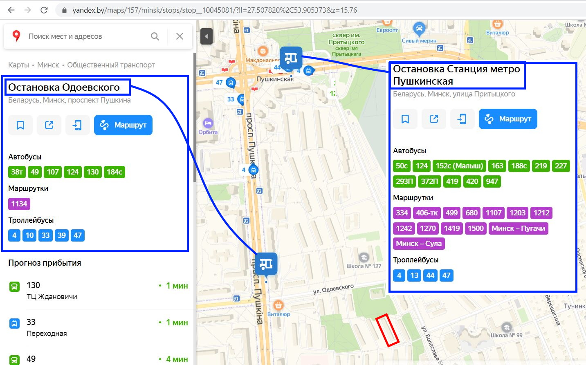
Продукты
-
Магазины у дома (2 минуты ходьбы, если не по переходу):
- Легион маркет
- Мясной дворик
- Rоял маркет
- Провиант - 4 минуты ходьбы. Избегайте чесночных булок, если не хотите потолстеть ;-)
- Виталюр - 4 минуты ходьбы
- Виталюр (на месте бывшего универсама "Фрунзенский"). Сюда удобно заходить по дороге домой, если идешь с метро.
- Евроопт - 7 минут ходьбы
- Соседи (Раковский Кирмаш)
- Рублевский - 8 минут ходьбы
- Хит-экспресс - 6 минут ходьбы
-
И другие
Фастфуд
Перекресток на м. Пушкинская часто называют - фастфуд перекресток.
- Макдональдс (м. Пушкинская)
- Бургер-Кинг (м. Пушкинская)
- Додо-пицца (м. Пушкинская)
- Doner King (Раковский Кирмаш)
- Мираж Döner (чуть в стороне от м. Пушкинская)
Промтовары и бытовая химия
- Алекор (м. Пушкинская).
- Мила (Общественный центр микрорайона Харьковская-1).
- Остров Чистоты (Общественный центр микрорайона Харьковская-1).
- Мир цвета - лаки и краски (Общественный центр микрорайона Харьковская-1).
Медицина и здоровье
-
Детская поликлиника № 16 (розовое здание на фото) - прямо напротив торца дома.
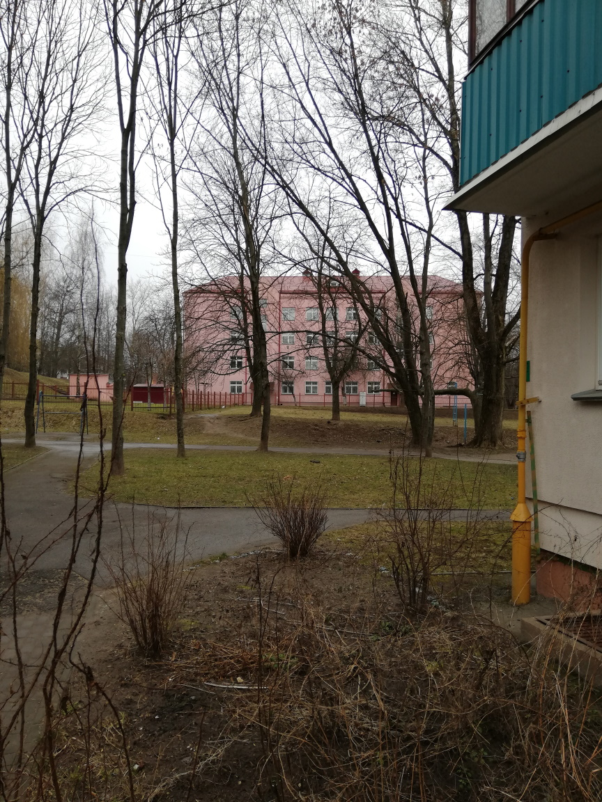
- Поликлиника № 20 - 6 минут ходьбы. В настоящее время производится ее реконструкции и расширение.
По паспорту объекта завершить должны в 2020 году. Работают быстро.
- Аптека "Белфармация" - 3 минуты ходьбы (Общественный центр микрорайона Харьковская-1)
- Стоматология "Шик Денталь" - 3 минуты ходьбы (Общественный центр микрорайона Харьковская-1)
-
Протезно-ортопедический центр с поликлиникой - 11 минут ходьбы
- УЗИ
- Массаж
- Массаж механический
- Физиотерапия
Физкультура и спорт
-
Спорткомплекс Спартак - 3 минуты ходьбы:
- Гимнастика - девочек привозят со всего города
- Борьба
- Тяжёлая атлетика
- Таэквондо
- Каратэ
-
СДЮШОР по Боксу (Общественный центр микрорайона Харьковская-2) - 8 минут ходьбы.
-
ФОК протезно-ортопедического центра - 11 минут ходьбы:
- Бассейн
- Детский бассейн и обучение плаванию
- Тренажерный зал
- Спортивный зал
-
ФОК "Дорстрой" - также с бассейном и спортзалом - 13 минут ходьбы.
- Бассейн
- Тренажерный зал
- Спортивный зал
- SPA
-
Тренажерный зал "Викинг" - 13 минут ходьбы.
-
Клуб спортивных единоборств "ШОК" Дмитрия Шакуты (тайский бокс, кикбоксинг, ММА) - 4 минуты ходьбы.
-
На огороженной от автомобилей территории школ рядом с домом:
- Cтадион с искусственым газоном
- Стадион с покрытием
- Волейбольно-баскетбольная-минифутбольная площадка
- Волейбольная площадка
- Турники
- Брусья
- Брусья
- Стенки
- Скамьи для пресса
Для младших школьников есть:
- Cтенка для скалолазания
- Веревочный городок
- Несколько пар гимнастических колец
- Самокатная площадка с дорожными знаками
Дошкольные учреждения
- Cанаторный детский сад-начальная школа № 270 - 4 минуты ходьбы
- Ясли-сад № 288 - 6 минут ходьбы
- Ясли-Сад № 279 - 6 минут ходьбы
- Ясли-Сад № 221 - 8 минут ходьбы
- Ясли-Сад № 205 - 10 минут ходьбы
- Ясли-сад № 380 - отличный детский сад холдинга Горизонт с бассейном - 9 минут ходьбы
Школы
- Средняя школа № 127 - 4 минуты ходьбы (несколько лет назад был капремонт)
- Средняя школа № 96 - 7 минут ходьбы
- Средняя школа № 99 - 7 минут ходьбы (в прошлом году завершили капремонт)
- Гимназия № 27 (информационно-экономическая), которая в 2019 году была признана лучшей в городе - 19 минут ходьбы
Релилия:
- Введенская церковь - 15 минут ходьбы.
Социальные учреждения
- ЖЭС №16 (Общественный центр микрорайона Харьковская-1)
- Расчетно-справочный центр №9 (Общественный центр микрорайона Харьковская-1)
- Почтовое отделение №220074 (Общественный центр микрорайона Харьковская-1)
- Почтовое отделение №220092 (Общественный центр микрорайона Харьковская-2)
- Центр социального обслуживания населения Фрунзенского района (Общественный центр микрорайона Харьковская-1)
Банки и банкоматы
- Беларусбанк: отделение и банкомат (Общественный центр микрорайона Харьковская-1)
- Приорбанк: банкомат (Раковский Кирмаш)
- Приорбанк: отделение и банкомат (м. Пушкинская)
- МТБ банк: отделение и банкомат (м. Пушкинская)
- БТА Банк: банкомат (Многофункциональный комплекс по проспекту Пушкина)
Мобильные операторы
- МТС (м. Пушкинская)
- A1/Velcom (м. Пушкинская)
- Life:) (Раковский Кирмаш)
Иное
- Книжный магазин (Общественный центр микрорайона Харьковская-1)
- Парихмахерская (Общественный центр микрорайона Харьковская-1)
- Ремонт одежды (Общественный центр микрорайона Харьковская-1)
- Пункт выдачи Wildberries (Бизнес-центр Пушкинский)
Автовладельцам
Отличное расположение недалеко от основных магистралей. Дорожная сеть при необходимости позволяет проложить маршрут в обход пробки.
На машине - 5 минут до Притыцкого или Второго кольца (проспект Пушкина), по Харьковской - 7 минут до недавно завершенного участка Первого кольца (Домашевский переулок).
- Про возможность поставить машину под окнами мы уже писали. В крайнем случае машиту можно оставить чуть подальше - на стоянках вдоль ул. Берута или ул.Одоевского.
- В 6-9 минутах ходьбы находятся 3 охраняемые автостоянки, на которых можно оставить машину например на время отпуска.
- В 2020 году установлены зарядные станции для электромобилей на пересечении ул. Берута и ул. Одоевского
- В 6 митутах езды - две заправки: А-100 и Лукойл, чуть подальше - Газпромнефть и Беларусьнефть.
- В 5-7 минутах езды - промзоны, в которых много СТО, шиномонтажей, покрасок и др.
Сами пользуемся следующими автоуслугами:
- Ручная автомойка на Берута 3а. (Там есть и шиномонтаж, но он мне не понравился).
- Автозаправка A-100 c автоматической автомойкой.
- Хороший шиномонтаж на Бетонном проезде (Бетонный проезд, 2А).
Для любителей домашних животных
- Есть официальная площадка для выгула и тренировок - 4 минуты ходьбы
- Для дополнительных тренировок активных собак несколько подальше (12 минут ходьбы - Маломедвежинский сквер) есть еще одна площадка с множеством оборудования.
Примечание - у нас самих нет домашних животных.
Зеленые зоны отдыха
-
Весь район зеленый. На спутниковом снимке можно сравнить наш район с Брилевичами.
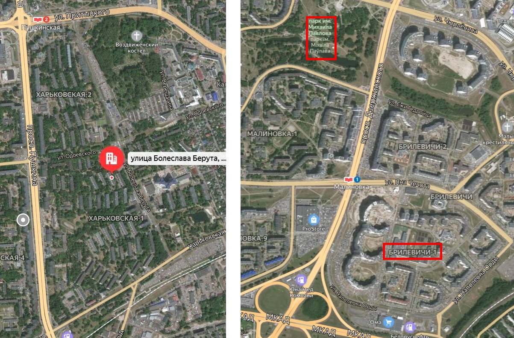
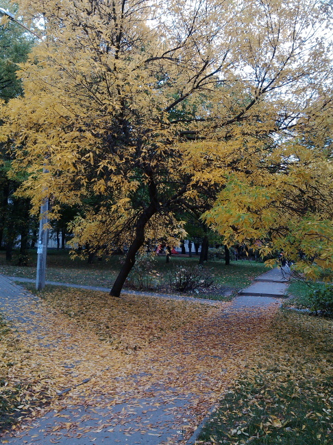
-
В центре микрорайона - большая зеленая зона
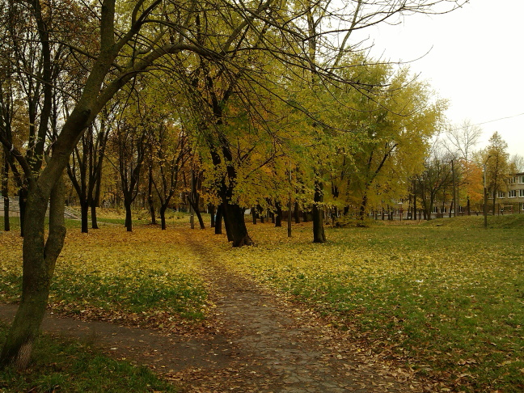
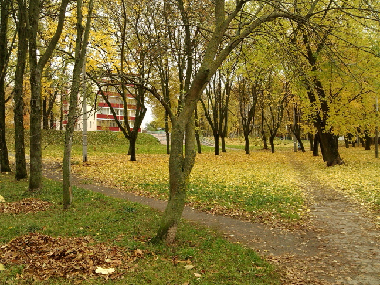
-
Тучинский сквер и водоем Мухля.
За время нашего проживания активисты добились значительных улучшений - были установлены
лавочки, отреставрированы скульптуры, нанесены красивые граффити.
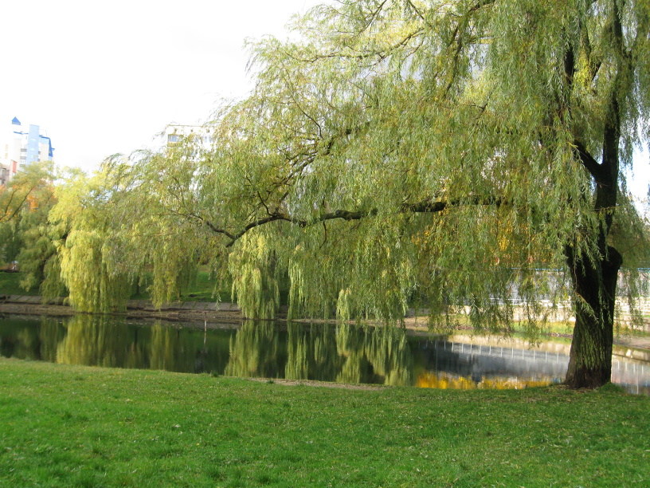
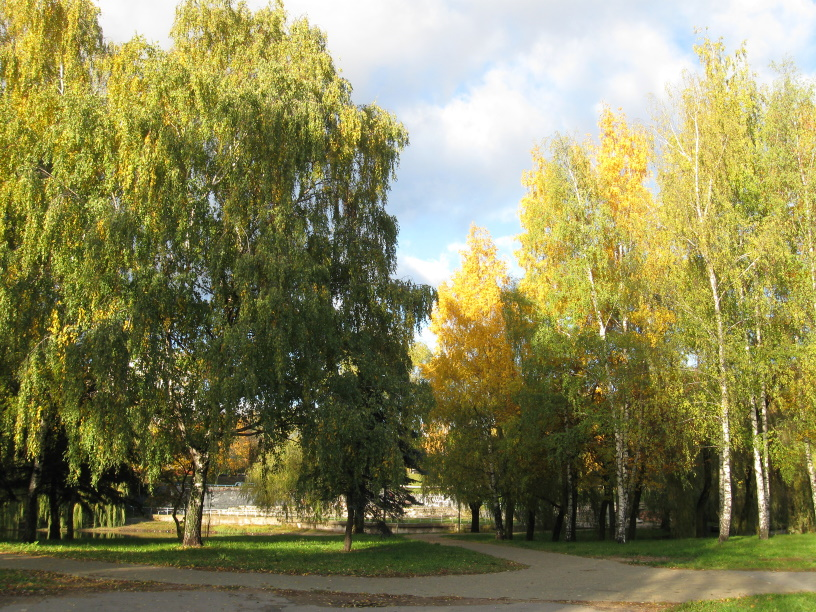
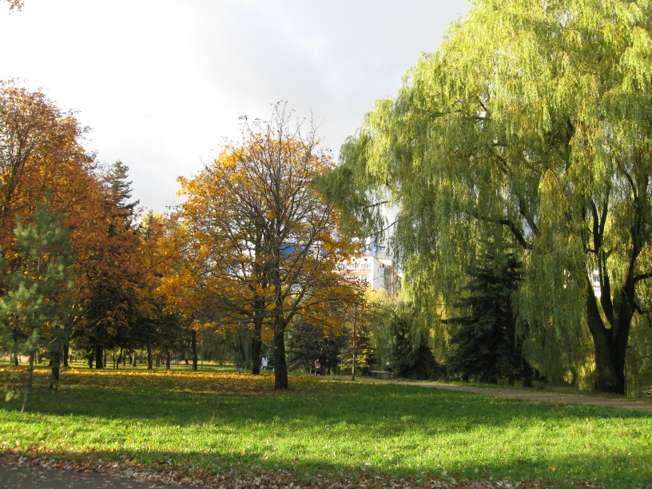
Статья о жилом районе в СМИ.
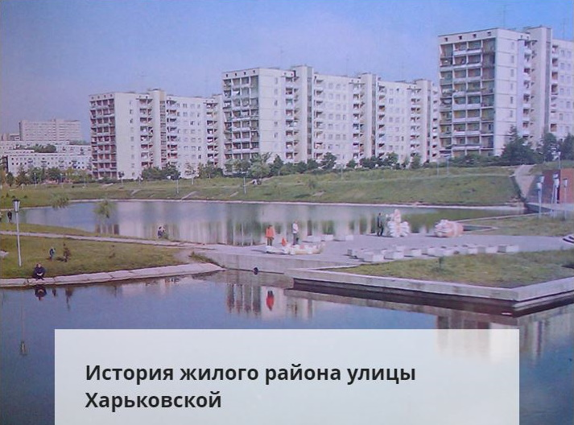
Множество фотографий и историю района можно найти в статье на сайте onliner.by
Квартира - см. здесь
Дом, двор и квартал - см. здесь